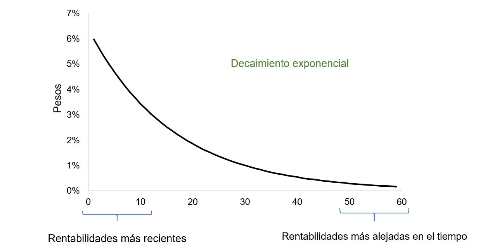

Volatilidad EWMA¶
Importar datos¶
datos = read.csv("Tres acciones.csv", sep=";", dec=",", header = T)
Matriz de precios¶
precios = datos[,-1]
nombres = colnames(precios)
nombres
- 'ECO'
- 'PFBCOLOM'
- 'ISA'
acciones = ncol(precios)
acciones
precios = ts(precios)
Matriz de rendimientos¶
rendimientos = diff(log(precios))

Volatilidad de cada acción¶
Esta forma de calcular la volatilidad también se llama volatilidad histórica. Cada uno de los rendimientos tiene igual peso para la volatilidad.
volatilidades = apply(rendimientos, 2, sd)
print(volatilidades)
ECO PFBCOLOM ISA
0.01862871 0.01583774 0.01556859
Volatilidad EWMA¶
Varianza:
Volatilidad EWMA:
\(\sigma_t:\) volatilidad en el período t.
\(\sigma^2_{t-1}:\) varianza del período \(t - 1\).
\(r^2_{t-1}:\) cuadrado de la rentabilidad del período \(t - 1\).
\(\lambda:\) Factor de decaimiento (decay factor). Es una constante y \(0 < \lambda < 1\). También llamada constante de suavizado.
Lambda determina los pesos que se aplican a las observaciones y la cantidad efectiva de datos que se utilizarán. Mientras más pequeño sea lambda, mayor peso tienen los datos recientes.

1¶
Recomendaciones de J. P. Morgan: Riskmetrics
\(\lambda = 0,94\) para rendimientos diarios.
\(\lambda = 0,97\) para rendimientos mensuales.
numero_rendimientos = nrow(rendimientos)
numero_rendimientos
Se utilizará lambda igual a 0.94. Este valor es recomendado para frecuencias diarias.
lambda = 0.94
Se calculará la volatilidad EWMA para cada período por cada acción. El
primer período tendra un valor igual a cero. Por tanto, en el segundo
ciclo for se empezará a partir de la segunda fila, porque en la
primera se especificará que será igual a cero.
volatilidad_EWMA = matrix(, numero_rendimientos, acciones) # Matriz para calcular volatilidad EWMA para cada período por acción.
volatilidad_EWMA[1,] = 0 # La primera fila de la matriz anterior tendrá como valor semilla igual a cero.
for(j in 1:acciones){
for(i in 2:numero_rendimientos){
volatilidad_EWMA[i, j] = sqrt((1 - lambda)*rendimientos[i - 1, j]^2 + lambda*volatilidad_EWMA[i - 1, j]^2)
}
}
En el código anterior, debido a que la volatilidad EWMA es recursiva, la
volatilidad del período actual depende del rendimiento y de la
volatilidad EWMA del período anterior \(t - 1\). Por esto, se
utiliza [i - 1] para indicar que se utiliza el valor del período
anterior.
print(head(volatilidad_EWMA))
print(tail(volatilidad_EWMA))
[,1] [,2] [,3]
[1,] 0.000000000 0.000000000 0.000000000
[2,] 0.004335493 0.006201571 0.006740513
[3,] 0.008140972 0.009685775 0.007133887
[4,] 0.009827886 0.009515765 0.009480782
[5,] 0.017128395 0.009307423 0.010199546
[6,] 0.017135220 0.012592325 0.014240597
[,1] [,2] [,3]
[2810,] 0.01467410 0.01202480 0.01661564
[2811,] 0.01431925 0.01191950 0.01623989
[2812,] 0.01393615 0.01239107 0.01587858
[2813,] 0.01356672 0.01277761 0.01549780
[2814,] 0.01315342 0.01238892 0.01627948
[2815,] 0.01285754 0.01204027 0.01749096
Volatilidad EWMA de cada acción¶
El último valor corresponde a la volatilidad EWMA de cada acción.
vol_EWMA = tail(volatilidad_EWMA, 1)
print(vol_EWMA)
[,1] [,2] [,3]
[2815,] 0.01285754 0.01204027 0.01749096
colnames(vol_EWMA) = nombres # se renombran las columnas con los nombres de las acciones.
print(vol_EWMA)
ECO PFBCOLOM ISA
[2815,] 0.01285754 0.01204027 0.01749096
Volatilidad EWMA:
ECO: 1,29% diaria.
PFBCOLOM: 1,20% diaria.
ISA: 1,75% diaria.